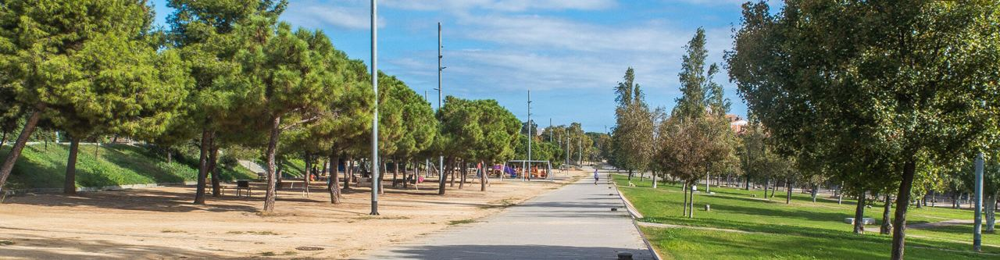

Ruta · Mataró
A la Ruta Parc Forestal , l’Ajuntament de Mataró ens proposa una excursió de la qual destaquem les platges, els boscos de pi i alzina, el Parc Forestal de Mataró i les vistes enlairades de la…